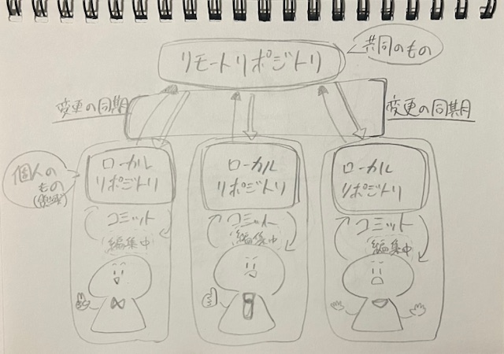

gitについて
gitとは、ファイルのバージョン管理を簡単にできるツールである。
＜gitでできること＞
・編集履歴を管理できる
➥ 新しく編集したファイルから古いバージョンのファイルまで保存できる。
➥ 編集履歴を枝分かれさせた複数のファイルを統合することができる。
・複数人でファイルや編集履歴を共有できる
➥ 他の人の行った修正を手元のファイルに反映させることができる。
➥ 誤って他の人が修正した最新データを上書きして消してしまうことを防げる。
【基本用語】
《リポジトリ》
ファイルや変更履歴を保存しておくデータベース。
「ローカルリポジトリ」と「リモートリポジトリ」がある。
ローカルリポジトリ ➔ ユーザーがローカル環境でソースコードの編集などを行う際に利用。
リモートリポジトリ ➔ 他ユーザーとファイル・変更履歴を共有する際に利用。

《コミット》
ファイルや変更履歴をリポジトリへ登録すること。
gitについて更に詳しく知りたいときは
こちらから
htmlについて
htmlとは、HyperText Markup Language（ハイパーテキスト マークアップ ランゲージ）の略で、
Webページを作成するためのマークアップ言語である。
Webページを一つの「家」に例えると
・html：柱や壁、屋根といった、家の「骨格・構造」を組み立てる役割。
・CSS：壁紙の色を決めたり、家具を配置したりする、見た目の「デザイン・装飾」の役割。
【htmlの基本構造】
《タグ》
「＜」と「＞」という記号で囲まれた、特定の意味を持つキーワードのこと。
ほとんどのタグは、＜p＞のような「開始タグ」と、スラッシュが入った＜/p＞のような「終了タグ」の2つで一対になっている。
開始タグと終了タグでコンテンツを挟むことで、その部分に特定の意味を与える。
《要素（Element）》
開始タグ、終了タグ、そしてその間に挟まれたコンテンツ全体を指す言葉。
《属性（Attribute）》
タグに追加の情報を与えるためのもの。
開始タグの中に属性名="値"という形式で記述する。
href属性は、リンクの飛び先となるURLを指定する役割を持っている。
【htmlのさまざまな機能】
《画像の表示方法》
画像を表示したい場合は、以下を入力する。
＜img src="写真のファイル名"width="好み％"＞
写真のサイズを1MB(1024KB)以下に落とす。
《リンクの表示方法》
リンクを表示したい場合は、以下を入力する。
＜a href="挿入したいリンク"＞表示名＜/a＞
htmlでよく使われるタグ一覧はこちらから